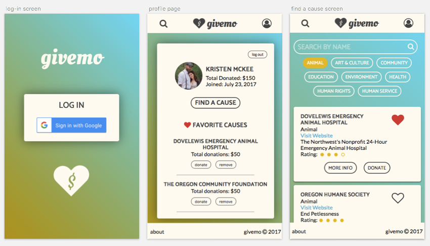

givemo
A mobile app designed to let users search for, favorite, and donate to charities in a quick, convenient way
About
Three other developers and I were challenged to design and build givemo in six days. The idea behind givemo is to make it easy for users to feel like they are making a real difference in the world, within seconds, straight from their phone.
Process
My team and I took a collaborative approach, splitting work evenly based on our interests and experience. We spent the first day researching charity-based APIs and brainstorming user flows and product features. By day two, we'd defined our MVP and divided out tasks for each of us individually and as pairs. As one of the two Designers on the project, I worked on the user flows, typography, colors, styling, and logo (and I came up with the name 'givemo', inspired by the popular payment app Venmo). We implemented Sass to code out the styles, which made it much easier for us to repeat styles across various components.
I also set up the Google sign-in authentication and worked on the 'favoriting' functionality of the app, using Firebase. These two key product features allow users to log in to their givemo accounts and see their saved preferences.
Technologies used: HTML, CSS/Sass, Sketch, Angular, Firebase, Charity Navigator API